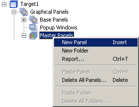
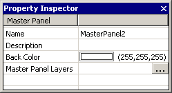

|
|
|
|
|
|
|
|
When designing master panels, we recommend that you create a master panel folder to organize a group of master panels. This enables you to copy or move a folder of master panels effectively, without breaking links already set up. You can create up to five master panel folders.
To create a new master panel, use one of the following methods:
In the Navigator window's Project tab, right-click the Master Panels node under the Graphical Panels node and select New Panel.

In the Navigator window, right-click the Base Panels and select New Panel with Master, and then select the master panel you want to use.
Create a new panel by selecting the  icon.
icon.
In the Property Inspector, define the properties for the new master panel.

|
Property |
Description |
|
Name |
The master panel name. Whenever a master panel is created, a default name is generated. When renaming the master panel, its name must be unique within the target, must contain no more than 32 valid characters, and must follow the naming conventions. For details, see Appendix 9, Naming Conventions. |
|
Description |
Enter a description about the master panel. You can enter a maximum of 255 characters. |
|
Back Color |
Select the background color of the master panel. |
|
Master Panel Layers |
Select master panel layers, which are other panels that you want the master panel to link to. Click the ellipsis button to open the Master Panel Layers dialog box. For more information on master panel layers, see Section 4.7.2.2, Working with Master Panel Layers. For more information on how to set up the Master Panel Layers dialog box, see Setting Up Master Panel Layers. |